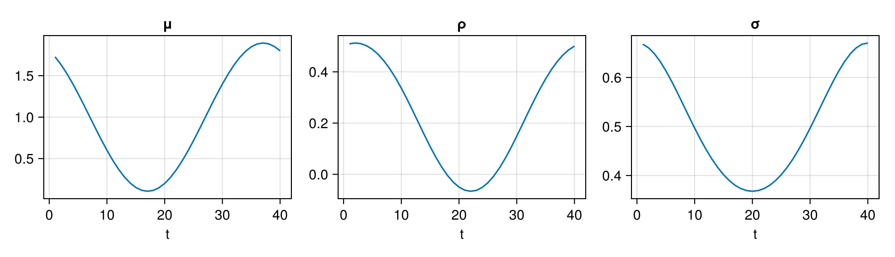
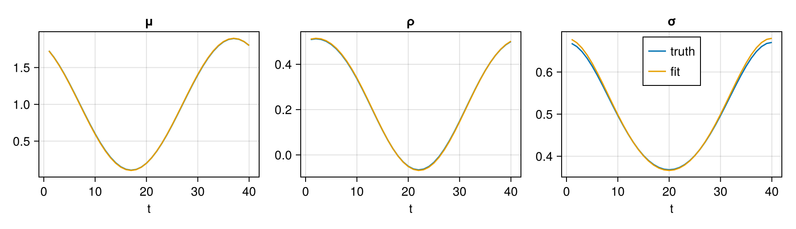

Seasonal AR(1)
We observe a real series $Y_1, \dots, Y_N$. Step $n$ falls at period index $t_n \in \{1, \dots, T\}$ of a cycle of $T$ steps (n2t[n], see the data layout). The series is a periodic autoregressive process of order 1: given $Y_1$,
\[Y_n = \mu(t_n) + \rho(t_n)\, Y_{n-1} + \sigma(t_n)\, \epsilon_n, \qquad n = 2, \dots, N,\]
where
- $\epsilon_2, \dots, \epsilon_N$ are independent $\mathcal{N}(0, 1)$ innovations;
- $\mu(t) \in \mathbb{R}$ is the intercept at period index $t$;
- $\rho(t) \in (-1, 1)$ is the autoregressive coefficient;
- $\sigma(t) > 0$ is the standard deviation of the innovation term.
Each parameter is a trigonometric polynomial of degree $d$ (any other basis can replace it),
\[P(t) = c_0 + \sum_{\ell=1}^{d} \left( c_{2\ell-1} \cos\frac{2\pi \ell t}{T} + c_{2\ell} \sin\frac{2\pi \ell t}{T} \right),\]
pushed through a link that keeps it in its domain:
\[\mu(t) = P^\mu(t), \qquad \rho(t) = 2\,\operatorname{logistic}\big(P^\rho(t)\big) - 1, \qquad \sigma(t) = \exp\big(P^\sigma(t)\big),\]
with $\operatorname{logistic}(x) = 1/(1 + e^{-x})$. The model has $3(2d + 1)$ coefficients, fitted by maximizing the likelihood of $Y_2, \dots, Y_N$ given $Y_1$.
This toy example simulates such a process with a known seasonality, fits it back, and chooses the degree of the polynomials.
using SmoothPeriodicStatsModelsusing Optimization, SimpleNonlinearSolve # loads the fitting routinesusing OptimizationOptimJL # the optimization algorithm, LBFGSusing Randomusing CairoMakiesolver = LBFGS() # every fit below takes its optimization algorithm explicitlyLBFGS{Nothing, LineSearches.InitialStatic{Float64}, LineSearches.HagerZhang{Float64, Base.RefValue{Bool}}, Returns{Nothing}}(10, LineSearches.InitialStatic{Float64}(1.0, false), LineSearches.HagerZhang{Float64, Base.RefValue{Bool}}(0.1, 0.9, Inf, 5.0, 1.0e-6, 0.6666666666666666, 50, 0.1, 0, Base.RefValue{Bool}(false), nothing, false), nothing, Returns{Nothing}(nothing), Optim.Flat(), true)A model with known coefficients
SmoothAR1(d, T) is a model whose three parameters are trigonometric polynomials of degree d over a cycle of T steps. Its coefficients start at zero. parameters(m) returns them as a ComponentArray with one block per parameter: parameters(m).μ is $(c_0, c_1, \dots, c_{2d})$ of $P^\mu$, the constant term then a cosine and a sine coefficient per harmonic.
T = 40truth = SmoothAR1(1, T)ps = parameters(truth)ps.μ .= [1.0, 0.8, -0.4] # μ(t) = 1 + 0.8 cos(2πt/T) - 0.4 sin(2πt/T)ps.ρ .= [0.5, 0.6, 0.2]ps.σ .= [-0.7, 0.3, 0.0] # σ(t) = exp(-0.7 + 0.3 cos(2πt/T))truthSmoothAR1 over a period of 40, 9 coefficients
ParamSpec with 9 coefficients:
μ ConstantBasis() + FourierBasis(40, 1) => IdentityLink() [1:3]
ρ ConstantBasis() + FourierBasis(40, 1) => IntervalLink(-1, 1) [4:6]
σ ConstantBasis() + FourierBasis(40, 1) => LogLink() [7:9]
curve(m, name) evaluates one parameter over the cycle, link applied.
function plot_curves(models, labels) fig = Figure(size=(900, 260)) for (i, nm) in enumerate((:μ, :ρ, :σ)) ax = Axis(fig[1, i], title=string(nm), xlabel="t") for (m, label) in zip(models, labels) lines!(ax, 1:T, curve(m, nm); label) end i == 3 && length(models) > 1 && axislegend(ax, position=:ct) end return figendplot_curves([truth], ["truth"])
Simulate and fit
rand(m, N; y₁) simulates N steps from the initial value y₁. Step n has period index n2t[n], with n2t = n_to_t(N, T) by default (1, 2, …, T, 1, 2, …).
Random.seed!(1)N = 20_000y = rand(truth, N; y₁=0.0)20000-element Vector{Float64}:
0.0
1.5906147502393981
2.687187615194765
2.249344601816209
3.8879434315897434
3.6553702310625904
2.7764361560856665
2.963609070108618
1.4152697042143427
0.5582465909201424
⋮
1.8764119905836238
2.4591214235737318
3.571507191363774
3.242300637345815
3.0760537711631035
2.681842403005306
3.295872529297945
3.467585514033265
2.8393443756334866fit_mle(model, y; solver) starts from the coefficients of model and returns the fitted model together with a FitHistory.
m, history = fit_mle(SmoothAR1(1, T), y; solver)historyFitHistory: converged in 47 iterations, loglikelihood -14479.5325plot_curves([truth, m], ["truth", "fit"])
The fitted coefficients, block by block; parameters(m).σ is the block of σ:
parameters(m)ComponentVector{Float64}(μ = [0.9995692711786253, 0.8002148558850142, -0.4068064339108675], ρ = [0.500508592649318, 0.603696616495653, 0.2058330555876789], σ = [-0.6949104361401782, 0.30935288001712674, -0.0008720595599123067])AR1(m) gives the curves themselves, and rand(m, N) simulates from the fitted model.
Choosing the degree
fit(SeasonalFit, model, y; solver) runs the same fit and keeps what model selection needs, so loglikelihood, dof, nobs, aic and bic apply to it.
fits = [fit(SeasonalFit, SmoothAR1(d, T), y; solver) for d in 0:3][(degree=d, dof=dof(f), bic=round(bic(f); digits=1)) for (d, f) in zip(0:3, fits)]4-element Vector{@NamedTuple{degree::Int64, dof::Int64, bic::Float64}}:
(degree = 0, dof = 3, bic = 40134.5)
(degree = 1, dof = 9, bic = 29048.2)
(degree = 2, dof = 15, bic = 29094.5)
(degree = 3, dof = 21, bic = 29146.5)The BIC is lowest at the degree the data were simulated with.
A parametrization of your own
The three parameters need not share a basis. Any ParamSpec naming μ, ρ and σ, in that order and with σ behind a LogLink(), defines a model. Here ρ is constant (a degree-0 TrigBasis is just an intercept) and μ has degree 2.
spec = ParamSpec( μ=TrigBasis(T, 2) => IdentityLink(), ρ=TrigBasis(T, 0) => IntervalLink(-1, 1), σ=TrigBasis(T, 1) => LogLink(),)f2 = fit(SeasonalFit, SmoothAR1(spec, T), y; solver)(ρ=coef(f2, :ρ), dof=dof(f2), bic=round(bic(f2); digits=1))(ρ = [0.5425425736815691], dof = 9, bic = 30043.3)The true ρ varies over the cycle, and the BIC says so: this model is worse than the degree-1 fit above. A parameter can also take a basis other than the trigonometric one, such as periodic B-splines; the bases guide fits this model with several.
This page was generated using Literate.jl.